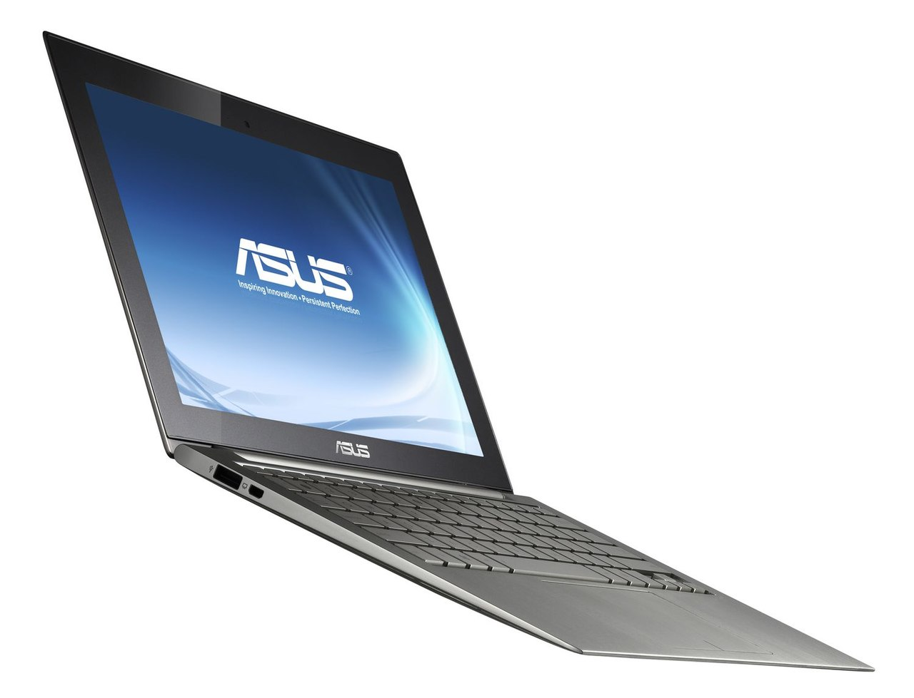
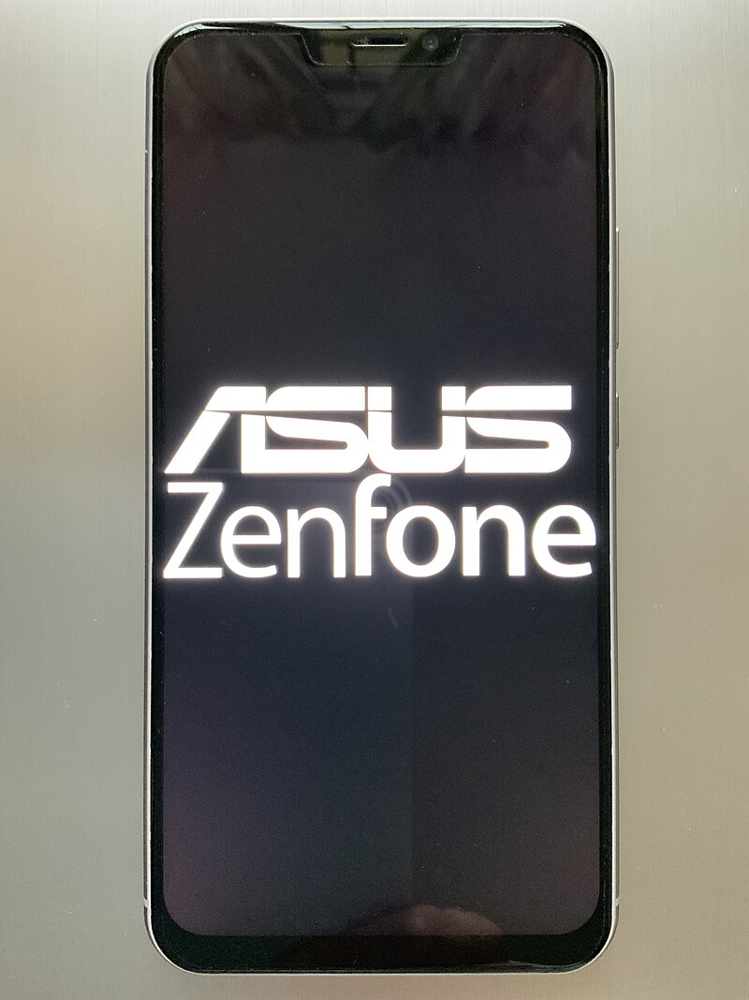
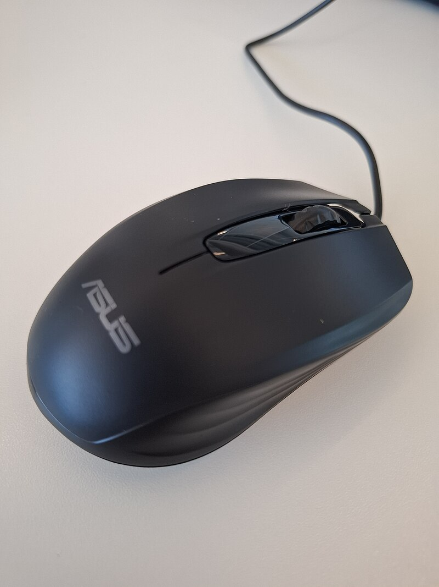
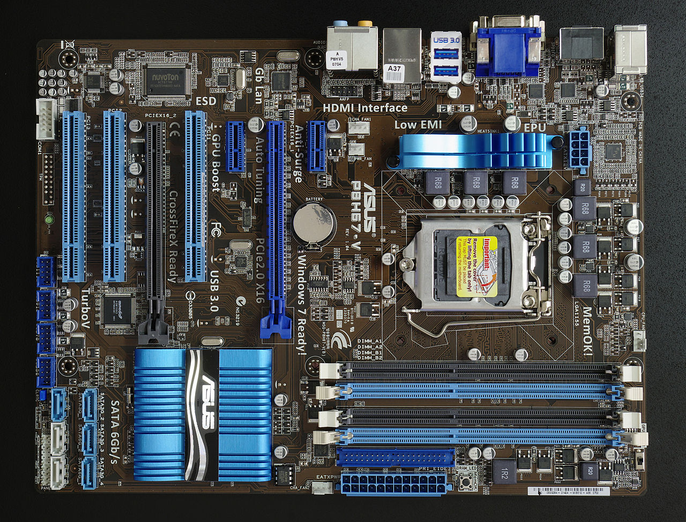
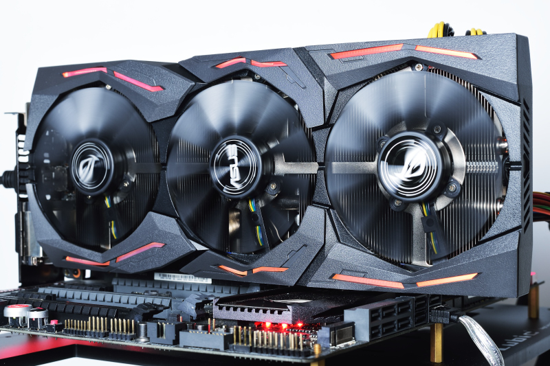

ASUSTeK Computer Inc. stylized as ASUSTeK or ASUS is a Taiwanese[7] multinational computer, phone hardware and electronics manufacturer headquartered in Beitou District, Taipei, Taiwan. Its products include desktop computers, laptops, netbooks, mobile phones, networking equipment, monitors, Wi-Fi routers, projectors, motherboards, graphics cards, optical storage, multimedia products, peripherals, wearables, servers, workstations and tablet PCs. The company is also an original equipment manufacturer (OEM).
ASUS' products include 2-in-1s, laptops, tablet computers, desktop computers, smartphones, personal digital assistants (PDAs), servers, computer monitors, motherboards, graphics cards, sound cards, DVD drives, computer networking devices, computer cases, computer components and computer cooling systems. One of ASUS main lineup is the Vivo lineup consisting of laptops (VivoBooks), All-in-Ones (Vivo AiO), desktops (VivoPC), Stick PCs (VivoStick), Mini PCs (VivoMini), smartwatches (VivoWatch), computer mouse (VivoMouse) and tablets (VivoTab).[
|  |
|---|
|  |
|---|
|  |
|---|
|  |
|---|
|  |
|---|
panjagutta hydrabad
secuandrabad telangana
address
Millenium Square, 6-3-350, Rd Number 1, Mothi Nagar,
Dwarakapuri, Banjara Hills,
Hyderabad, Telangana 500082
contect
07997 00721Location
" width="600" height="450" style="border:0;" allowfullscreen="" loading="lazy" referrerpolicy="no-referrer-when-downgrade">